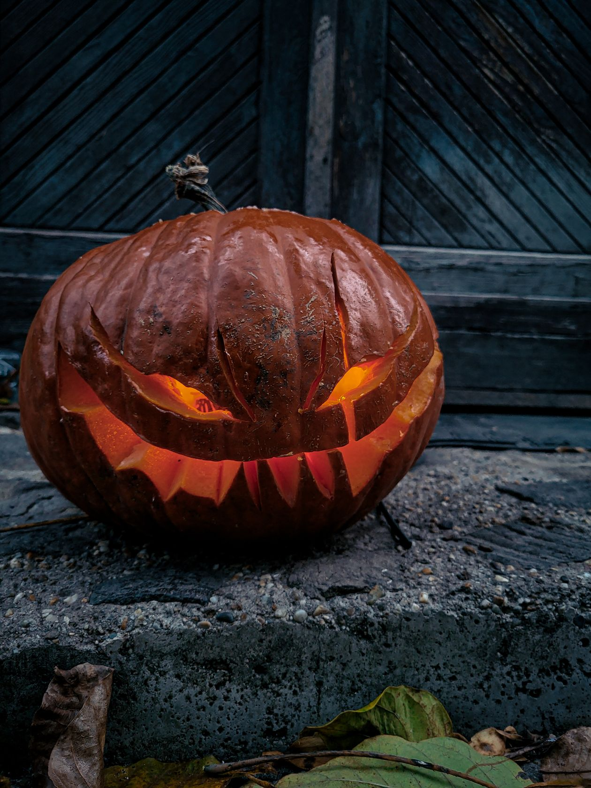

Sleepy Hollow, New York — Halloween is the harvest
I am Eliza Crowe. I carve pumpkins for Halloween the way they were carved before foam and patterns — a real pumpkin, a sharp ribbon tool, and a face I draw straight onto the skin. A carved pumpkin is a lantern with a deadline, and I would not have it any other way.

The Gatekeeper
Pumpkin Display, 34 lb · Design cut-through face · Carve 2 hours · Lit 4 nights on a client's gate steps
Fresh off the bench
Work that lights, then leaves
Every piece below was photographed on a client's ground, not in a studio. The tombstone under each one is the whole truth: what it weighed, how long it took, and how many nights it had.
The Night Orchard Walk
Pumpkins 46, porch & display · Carve 74 hours over 3 days · Lit 3 festival nights · the full story
The Snarler, for Crooked Ladder Brewing
Pumpkin Display, 31 lb · Design cut-through mascot · Carve 2 hours · Lit 4 nights in the taproom window

Three Characters, school fundraiser
Pumpkins 3 porch classics · Design faces drawn with the children · Carve 3 hours, live · Raised $1,840 in raffle tickets
The Commission Planner
Price it yourself, dates and all
Everything the planner does is printed in the rate table under it — the same figures I quote from at the bench. Pick a size, a design and a count, then give it your dates. It will tell you the price, and it will tell you honestly if your carve date misses your night.
Pumpkin size
Design
How many pumpkins
Your dates
The reckoning
Now the dates.
Spares are billed at pumpkin price only — one in five, because one in five hides a bad wall. An uncarved spare goes home with you; they make fine soup. Book this carve.
| Size class | Pumpkin | Cut-through face | Shaded portrait | Sculpted relief | Handling |
|---|---|---|---|---|---|
| Porch Classic · 10–15 lb | $16 | 1 hr | 3 hrs | 5 hrs | — |
| Display · 25–40 lb | $48 | 2 hrs | 6 hrs | 10 hrs | — |
| Giant · 100–150 lb | $210 | 5 hrs | 14 hrs | 24 hrs | $140 per pumpkin |
Live carving at your event is a separate, simpler bargain: $95 an hour, three-hour minimum, I bring the bench, the tools and the pumpkins we agree on. Lifespans: a cut-through face is at its best within 4 days of carving, a sculpted relief within 5, a shaded portrait within 6 — the wall stays whole on a portrait, so it keeps longest. Kept cold and damp, add a day. Kept on a warm porch, subtract one.
How a pumpkin becomes a lantern
Five steps, no shortcuts worth taking
-
1
Pick by wall, not by looks
I buy by weight and by thump. A carving pumpkin should feel heavy for its size, ring hollow when knocked, and carry a wall an inch and a half thick — that thickness is what holds a shaded portrait. A pretty pumpkin with a thin wall is a pie waiting to happen.
-
2
Gut it, then thin it
The lid comes off at an angle so it seats back. Every seed and string comes out, then I scrape the carving wall down to an even inch. Uneven walls give uneven light — the glow tells on you.
-
3
Draw on the skin, never on paper
No printed patterns, no transfer paper. I draw the face straight onto the pumpkin with a grease pencil, because every pumpkin is a slightly different canvas and the drawing should know it. A pattern gives you the same face twice. I have never wanted the same face twice.
-
4
Carve through, or shade
A cut-through face is cut clean through the wall — bold, bright, and the shortest-lived. A shaded portrait never breaks the inner skin: I shave the flesh to different depths and the light does the drawing. Sculpted relief goes further, taking the surface down in layers like a woodcut.
-
5
Keep it alive, honestly
A ten-minute soak in cold water with a splash of bleach, petroleum jelly worked into every cut edge, and cold nights in the fridge or the barn. That buys the days in the table — and no trick buys more. Anyone who promises you a carved pumpkin for a fortnight is selling you a photograph.
From the Hollowbrook Inn commission
“Eliza told us on the first phone call exactly which night the portrait would peak and which night it would start to go — and she was right to the evening. Guests planned their photographs around her schedule. That honesty is rarer than the carving.”
June Pruitt, innkeeper, The Hollowbrook Inn — read the commission